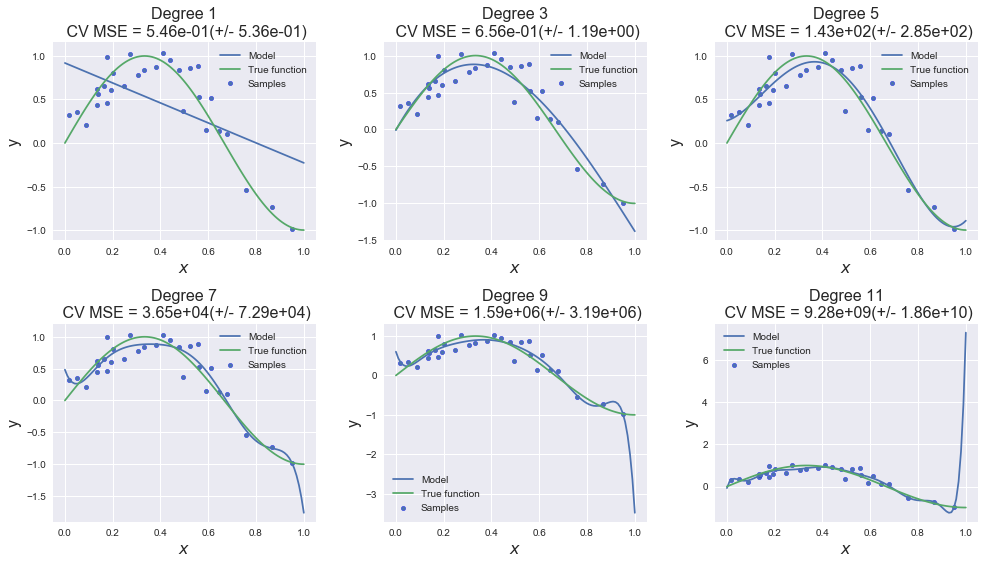
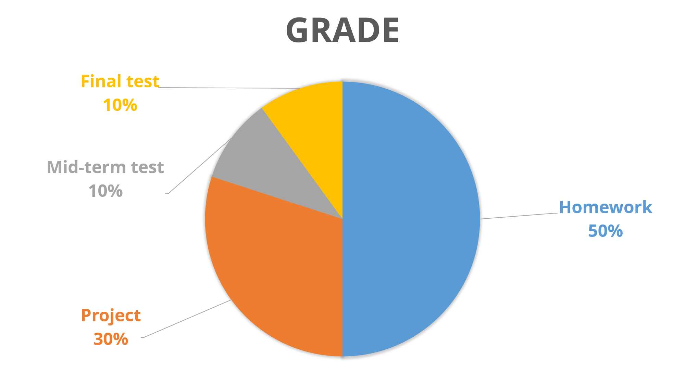

Institute of Computational Mathematics RAS
Skolkovo Institute of Science and Technology
Classes: Wednesday 10.00 - 12.00
Instructors: Ivan Oseledets, Danya Merkulov, Alexandr Katrutsa

This is one semester course, which provides students of CMC MSU with basic Machine Learning algorithms and ideas. The course will focus both on theoretical concepts and practical implementations of the numerical algorithms. Python 3 is the official ecosystem of the course.
All the materials will be available at this site in section "Lectures". It might be a lot of misprints, so - do not hestitate to drop me a line about it.
Will be also available here as soon as possible. Homeworks will be assigned roughly every week. Homework should be submitted through the Stepik platform. If you have some problems with stepik's deadlines - send me a message about it.
